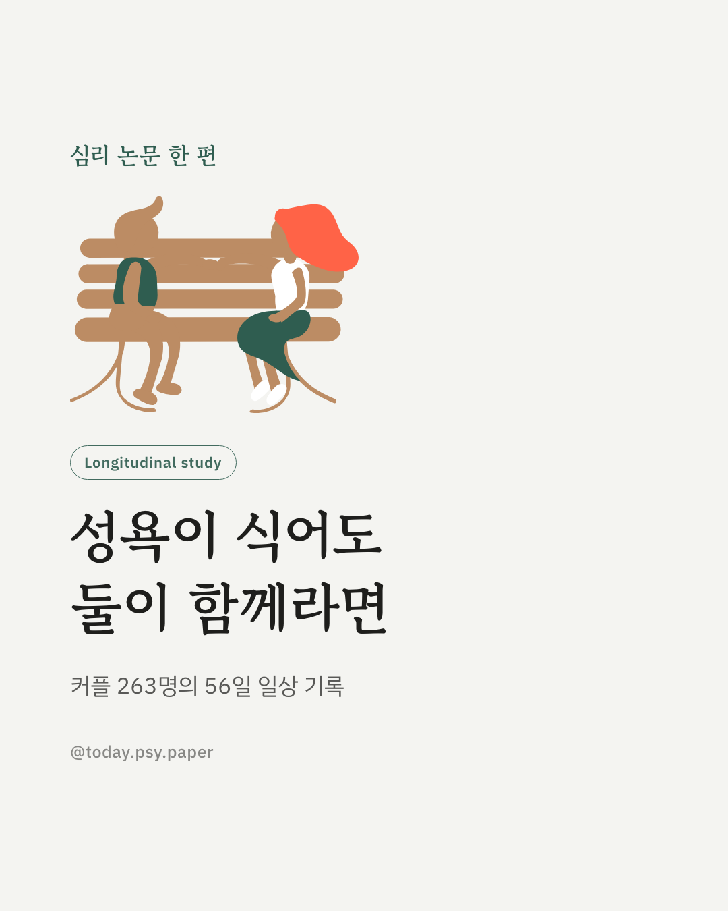
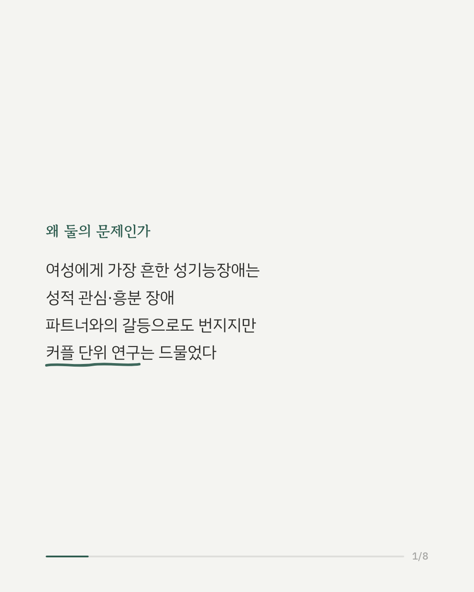
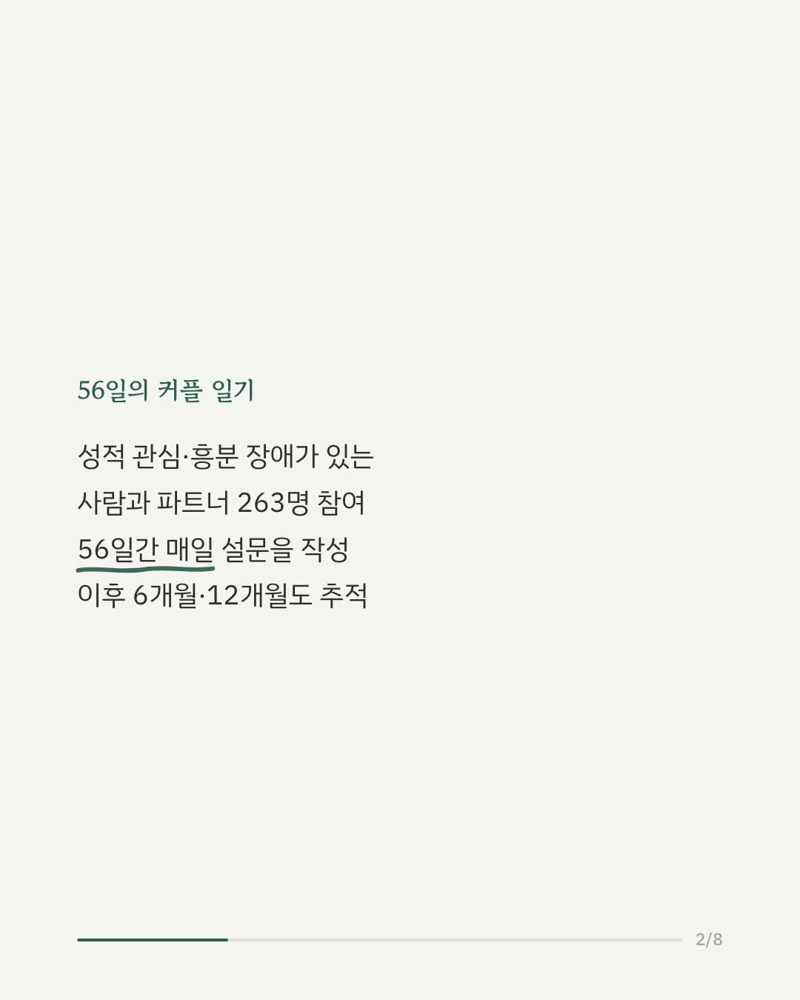
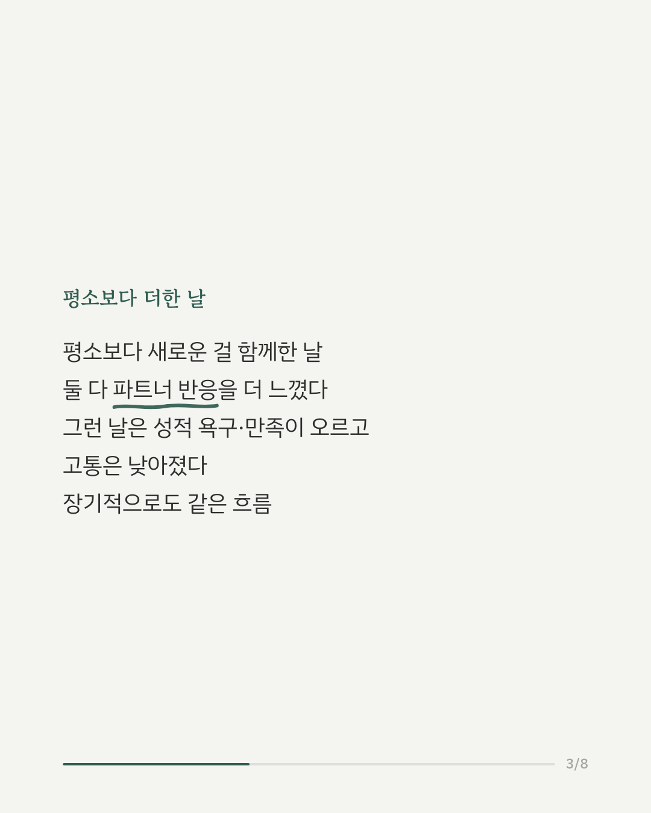
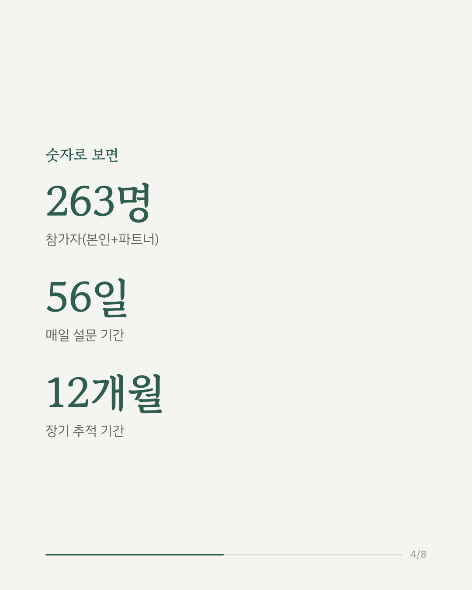
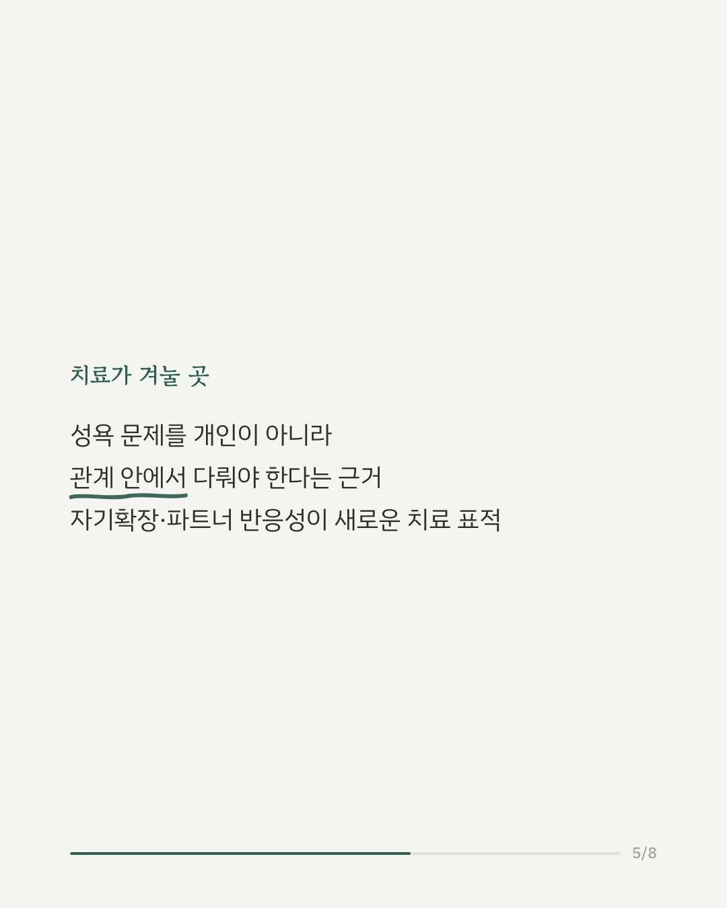
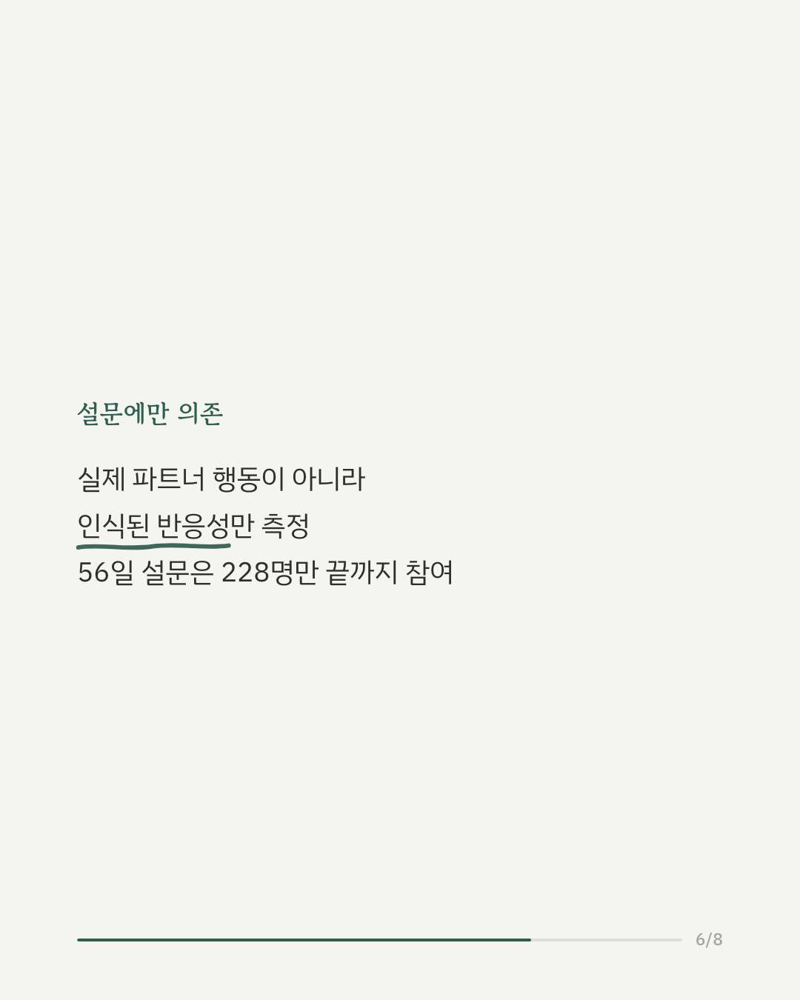
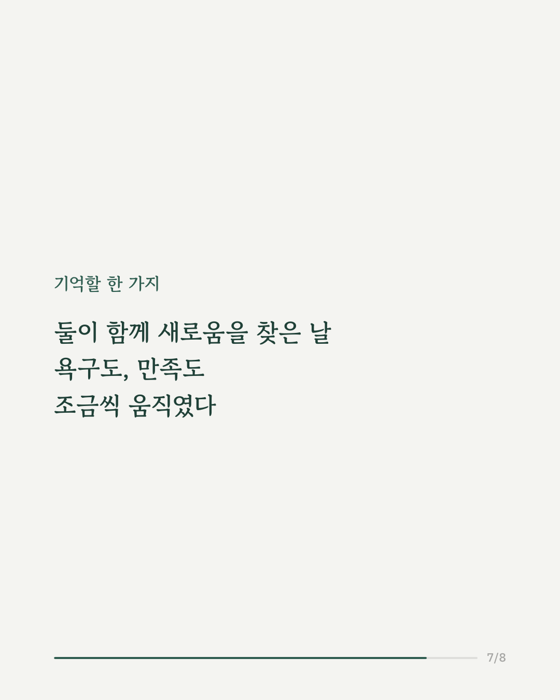
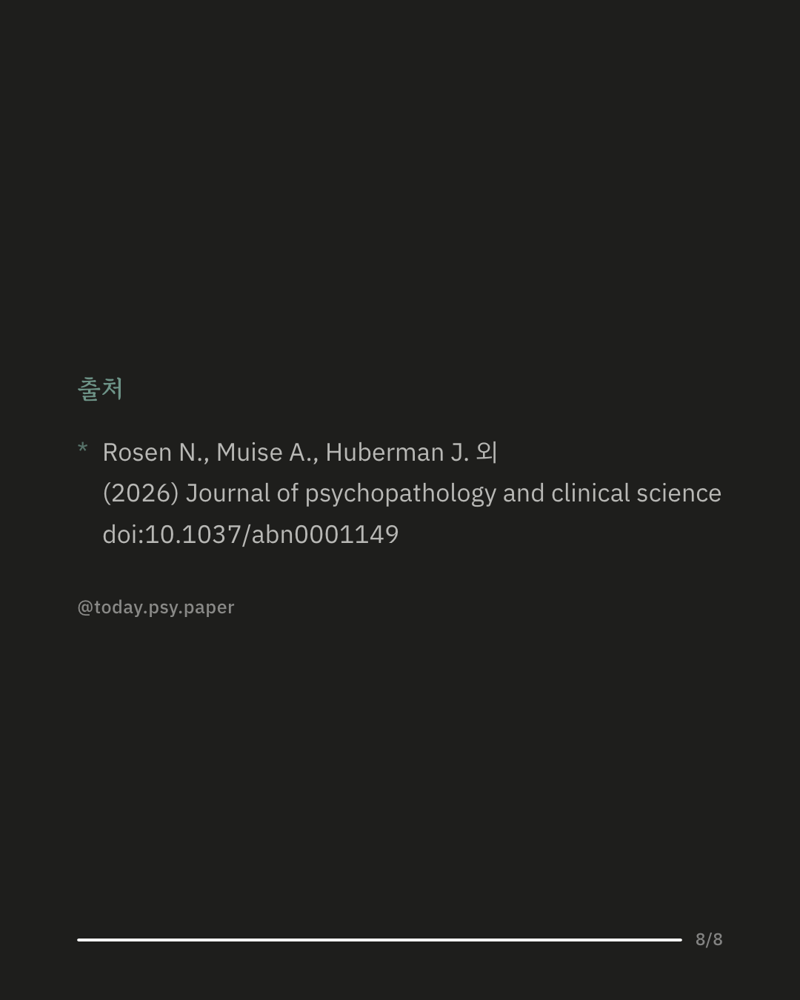

성욕이 잘 생기지 않고 흥분도 잘 안 되는 성적 관심·흥분 장애는 여성에게 가장 흔한 성기능장애입니다. 파트너와의 관계에도 영향을 미치는 경우가 많지만, 커플을 함께 들여다본 연구는 드물었습니다. 이 연구는 성적 관심·흥분 장애가 있는 사람과 파트너 263명을 대상으로 56일 동안 매일 설문을 받고, 이후 6개월과 12개월에도 다시 조사했습니다. 평소보다 새로운 경험을 더 많이 나눈 날에는 두 사람 모두 파트너가 자신에게 더 반응해 준다고 느꼈고, 그런 날일수록 성적 욕구와 만족은 높아지고 고통은 낮아졌습니다. 이 흐름은 6개월, 12개월 뒤에도 비슷하게 나타났습니다. 연구팀은 자기확장과 파트너의 반응성을 함께 높이는 방향이 커플 상담에서 다룰 만한 목표가 될 수 있다고 보았습니다. 다만 파트너의 반응성은 실제 행동이 아니라 각자가 느낀 정도로 측정됐고, 56일 조사를 끝까지 마친 인원은 228명이었습니다. 출처: Journal of Psychopathology and Clinical Science (2026), 'Expanding together: How self-expansion and partner responsiveness shape sexual well-being in couples coping with sexual interest/arousal disorder' #임상심리 #정신건강정보 #부부관계 #커플심리 #성기능장애 #관계심리 #심리학연구
python3 publish.py 42370888